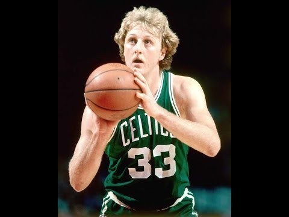
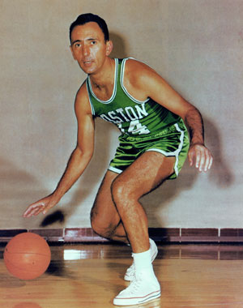
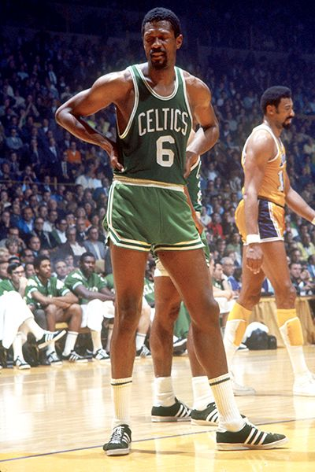

Larry Joe Bird (born December 7, 1956)
Bird was a 12-time NBA All-Star and was named the league's Most Valuable Player (MVP) three consecutive times (1984–1986). He played his entire professional career for Boston, winning three NBA championships and two NBA Finals MVP awards.
Robert Joseph "Bob" Cousy (born August 9, 1928)
Cousy played point guard with the Boston Celtics from 1950 to 1963. Leading the league an unprecedented 8 straight years in assists, playing on six NBA championship teams, and being voted into 13 NBA All-Star Games in his 13 full NBA seasons.
William Felton Russell (born February 12, 1934)
From 1956 to 1969, he was a five-time NBA Most Valuable Player and a twelve-time All-Star, he was the centerpiece of the Celtics dynasty, winning eleven NBA championships during his thirteen-year career.